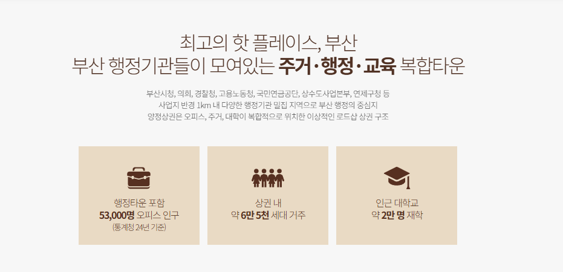
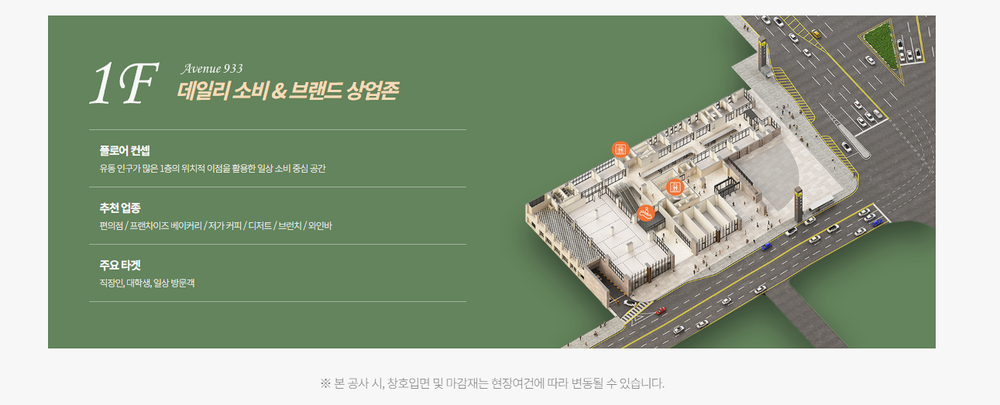
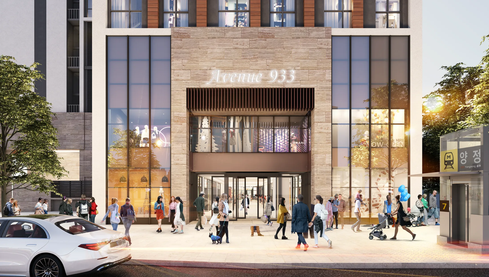
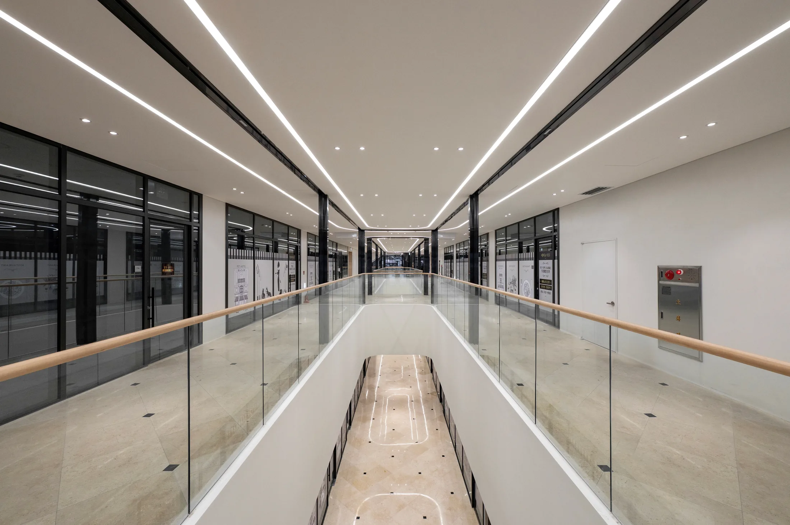
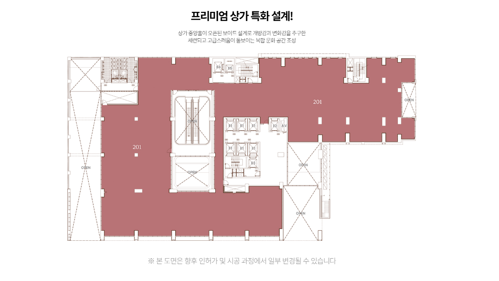
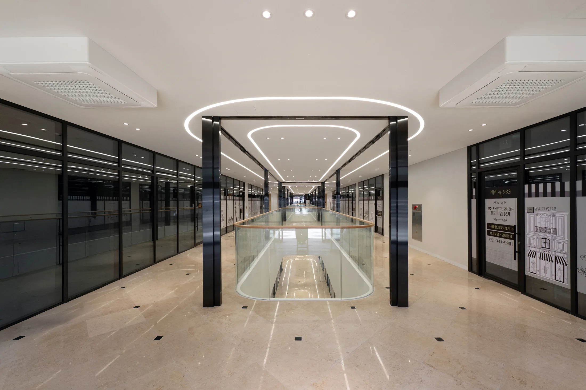
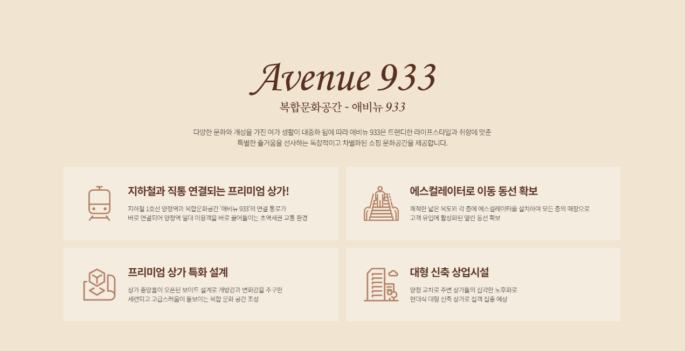

대중교통 이용 고객의 체감 접근성을 확인할 수 있는 초역세권 동선
BUSANJINGU · YANGJEONG
부산진구
아틀리에 933
양정역 1호선 직통 연결 프리미엄 상업시설
상가분양에서 필요한 입지·배후수요·호실 동선을 한 번에 확인하세요.
양정역 직통 연결상권 내 약 6만5천 세대쾌적한 주차환경

안내자료 기준 양정 상권의 주거 배후수요
시청·교육청 등 행정타운을 포함한 업무수요
차량 방문 고객의 이동 편의와 상가 접근 동선을 함께 확인할 수 있습니다.
COMMERCIAL VALUE
부산진구 상가분양,
좋은 건물보다 좋은 조건의 호실을 보는 일
상가분양은 새 건물이라는 이유만으로 판단하기 어렵습니다. 실제 영업과 임대가 이루어지는 공간인 만큼 고객이 어떻게 찾아오는지, 주변에 반복적으로 소비할 생활수요가 있는지, 주차와 내부 이동이 편리한지, 그리고 내가 선택한 호실이 눈에 잘 띄는지까지 함께 확인해야 합니다.
부산진구 아틀리에 933의 상업시설 AVENUE 933은 양정역 접근성, 주거 배후, 행정·오피스 수요, 몰형 상업시설의 내부 이동, 층별 호실 조건을 함께 비교할 수 있다는 점이 특징입니다. 분양가만 비교하는 방식보다 실제 운영 가능성을 기준으로 호실을 검토하는 것이 중요합니다.

접근성
지하철에서 상가까지의 이동이 얼마나 단순한지 확인합니다.
반복수요
주거, 행정, 교육, 오피스 수요가 시간대별로 이어지는지 살펴봅니다.
호실 경쟁력
전면 폭, 가시성, 에스컬레이터와 엘리베이터 거리까지 비교합니다.
※ 본 사이트 내에 사용된 이미지는 소비자의 이해를 돕기 위해 참고용으로 제작된 것으로 실제 시공 시 다를 수 있습니다.
DEMAND & LOCATION
한 가지 수요에 의존하지 않는
양정 생활권의 구조
상권은 단순히 사람이 많다는 이유로 유지되지 않습니다. 주거민이 생활서비스를 이용하고, 직장인이 평일 낮과 출퇴근 시간에 움직이며, 행정·교육시설 방문객이 특정 목적을 가지고 반복적으로 유입되는 구조가 중요합니다.
제공된 안내자료에는 상권 내 약 6만5천 세대, 행정타운을 포함한 오피스 인구 약 5만3천 명, 관공서 24개, 교육기관 77개, 금융기관 40개가 안내되어 있습니다. 이러한 수치는 호실의 실제 성과를 보장하는 자료가 아니라, 상권을 분석할 때 확인할 수 있는 배후수요의 성격을 보여주는 참고 지표로 보는 것이 좋습니다.
65,000+상권 내 주거 배후 세대
53,000행정타운 포함 오피스 인구
24관공서
77교육기관

LOCATION NETWORK
양정 생활권을
한눈에 살펴보는 이유
상가의 가치는 점포 내부만으로 결정되지 않습니다. 고객이 어느 방향에서 들어오고, 어떤 목적을 가지고 이동하며, 상가 주변에 얼마나 자주 방문할 이유가 있는지를 함께 살펴봐야 합니다.
특히 병의원, 식음, 카페, 생활서비스처럼 반복 방문이 중요한 업종이라면 역 접근성과 주거·업무수요가 서로 겹치는 구조가 중요합니다. 투자 목적으로 분양을 검토하는 경우에도 향후 어떤 업종이 안정적으로 임차할 수 있을지 역산해서 보는 것이 좋습니다.

양정역 직통 연결
단순한 도보 거리보다 지하철에서 상업시설까지 이동 과정이 단순한지를 확인해야 합니다. 목적형 방문이 많은 병의원과 생활서비스 업종에서 특히 중요한 요소입니다.
몰형 상업시설
한 업종을 위해 방문한 고객이 다른 업종을 함께 이용할 가능성을 살펴볼 수 있습니다. 건물 전체의 입점 구성과 집객시설 여부가 상권 체류에 영향을 줄 수 있습니다.
쾌적한 주차환경
병의원, 식음, 교육, 뷰티처럼 체류시간이 긴 업종은 차량 방문 고객이 주차 후 점포까지 편하게 이동할 수 있는지가 중요합니다. 주차장과 엘리베이터, 상가 내부 연결 동선을 실제 현장에서 함께 확인하는 것이 좋습니다.
층간 이동 동선
상층부 상가는 1층 유동이 자연스럽게 올라오는지 확인해야 합니다. 에스컬레이터, 엘리베이터, 주차장 연결 위치와 점포 전면의 노출도를 함께 비교하는 것이 좋습니다.
층별 안내
AVENUE 933, 층별 공간을더 간결하게 살펴보세요
AVENUE 933은 층별로 고객의 접근 방식과 이동 흐름이 달라질 수 있습니다. B1은 양정역 연결 동선, 1F는 전면 노출과 접근성, 2F는 상층부 이동과 목적형 방문을 중심으로 각 층의 특징을 확인해보세요.
B1
양정역 연결 · 지하 진입 동선
지하철 이용객이 상업시설로 진입하는 첫 구간
B1은 양정역 연결부에서 상가 내부로 이어지는 흐름을 확인하는 층입니다. 역에서 진입한 방문객이 어느 방향으로 이동하는지, 상층부로 올라가는 동선이 자연스러운지 함께 살펴보는 것이 좋습니다.
양정역 연결부에스컬레이터 동선엘리베이터 접근


1F
전면 노출 · 보행 접근성
외부 보행객과 방문객이 가장 먼저 마주하는 층
1층은 출입구와 점포 전면의 거리, 외부에서 보이는 시야, 코너 여부 등 실제 노출과 접근성을 함께 비교해보는 것이 중요합니다.
주출입구와 거리점포 전면 폭간판 노출



2F
목적형 방문 · 메디컬 동선
상층부는 올라오는 과정과 도착 후 시야가 중요합니다
병원·의원과 전문서비스처럼 목적형 방문이 많은 업종은 1층에서 2층까지 이동하는 과정과 도착 후 원하는 호실을 쉽게 찾을 수 있는지를 함께 봐야 합니다.
에스컬레이터 도착점엘리베이터 하차 시야메디컬 동선



호실 선택 체크포인트
같은 층에서도 호실별 조건은 달라질 수 있습니다
전용면적점포 전면 폭에스컬레이터 거리
엘리베이터 접근간판 노출급배수·전기·환기
※ 사용된 이미지는 소비자의 이해를 돕기 위한 참고용이며 실제 시공 및 현장 상태와 다를 수 있습니다. 층별 구성, 현재 분양 가능 호실, 전용면적, 설비 조건 및 입점 가능 업종은 상담 시 개별 확인이 필요합니다.

RECOMMENDED BUSINESS
메디컬부터 생활밀착 업종까지,
업종별로 필요한 조건은 다릅니다
제공된 안내자료에는 내과, 소아청소년과, 피부과, 정형외과, 치과, 한의원, 이비인후과 등이 추천 진료과목으로 제시되어 있습니다. 다만 의료기관은 단순히 위치만 보고 결정하기보다 의료기관 개설 가능 여부와 진료과별 설비 조건을 먼저 확인해야 합니다.
일반 상가의 경우에도 카페, 식음, 뷰티, 교육, 생활서비스처럼 업종별로 필요한 전면 노출, 급배수, 배기, 체류시간, 주차 조건이 달라집니다. 따라서 ‘좋은 상가’보다 ‘내 업종에 맞는 호실’을 찾는 접근이 중요합니다.
내과소아청소년과피부과정형외과치과한의원이비인후과카페·식음뷰티생활서비스
인사이트
부산진구 상가분양을
조금 더 깊게 보는 방법
단순 홍보문구보다 실제 상가를 비교할 때 필요한 기준을 중심으로 정리했습니다. 입지, 배후수요, 호실 선택, 메디컬 개원, 임대 목적 분양까지 각각 다른 관점에서 확인해보세요.
01 · PROJECT
부산진구 아틀리에 933, 상가분양에서 봐야 할 핵심
양정역 직통 연결과 몰형 상업시설의 구조를 상가분양 관점에서 정리했습니다. 건물 전체의 장점보다 실제 호실 선택에서 무엇을 확인해야 하는지 살펴봅니다.
자세히 보기 → 02 · COMMERCIAL부산진구 상가분양, 배후수요만 보면 부족한 이유
주거 세대수와 유동인구 숫자만으로 상권을 판단하기 어려운 이유와 시간대별 수요, 업종 적합성, 고객의 반복 방문 가능성을 함께 보는 방법을 설명합니다.
자세히 보기 → 03 · LOCATION양정역 상가, ‘역세권’보다 중요한 실제 이동 동선
도보 몇 분이라는 표현보다 지하철에서 점포까지 이동 과정, 횡단보도와 외부 동선, 상층부 유입 구조가 왜 중요한지 상가 운영 관점에서 정리했습니다.
자세히 보기 → 04 · MEDICAL부산진구 메디컬 상가, 개원 전 반드시 확인할 조건
의료기관 개설 가능 여부, 전기·급배수·환기·하중·소방·장비 반입과 환자 주차 및 동선까지 진료과별 상가 선택 기준을 구체적으로 살펴봅니다.
자세히 보기 → 05 · UNIT GUIDE상가 호실 선택, 같은 평수라도 가치가 달라지는 이유
전면 폭, 코너 여부, 에스컬레이터 거리, 엘리베이터 접근, 간판 노출, 주차장 연결처럼 실제 영업에 영향을 줄 수 있는 호실별 차이를 정리했습니다.
자세히 보기 → 06 · INVESTMENT임대수익 목적 상가분양 전 확인해야 할 체크리스트
분양가만으로 판단하지 않고 예상 임차 업종, 관리비, 공실 가능성, 임차인의 손익 구조, 향후 업종 전환 가능성까지 함께 비교하는 방법을 안내합니다.
자세히 보기 →자주 묻는 질문
상가분양 상담 전
자주 확인하는 질문
계약 전에는 홍보자료의 장점뿐 아니라 실제 호실과 계약조건을 개별적으로 확인해야 합니다. 아래 내용은 상가분양 검토 단계에서 질문이 많이 나오는 항목을 기준으로 정리했습니다.
1. 아틀리에 933 상가분양에서 가장 먼저 비교해야 할 항목은 무엇인가요?
분양가와 전용면적만 비교하기보다 호실의 위치와 쓰임을 먼저 보는 것이 좋습니다. 주출입구에서 점포가 보이는지, 에스컬레이터와 엘리베이터에서 접근하기 쉬운지, 주차장에서 올라왔을 때 자연스럽게 지나가는 위치인지, 간판과 점포 전면이 어느 방향에서 노출되는지를 함께 확인해야 합니다.
직접 운영 목적이라면 예정 업종에 필요한 설비와 고객 동선을 우선하고, 임대 목적이라면 향후 들어올 가능성이 높은 임차 업종과 관리비·임대조건을 함께 검토하는 방식이 좋습니다.
2. 양정역 직통 연결이라는 조건은 실제 상가 운영에 어떤 의미가 있나요?
역에서 가깝다는 것과 실제로 이동이 편리하다는 것은 다를 수 있습니다. 고객이 역에서 나와 횡단보도를 건너거나 외부 도로를 돌아가야 하는지, 날씨의 영향을 받는지, 상가 내부로 들어온 뒤 원하는 층까지 이동하기 쉬운지를 확인해야 합니다.
제공된 안내자료에는 양정역 1호선과 직통 연결되는 상업시설로 안내되어 있습니다. 다만 실제 점포별 체감 접근성은 연결 통로와 호실 위치에 따라 차이가 있을 수 있으므로 최신 도면과 현장을 기준으로 최종 확인하는 것이 좋습니다.
3. 부산진구 메디컬 상가로 검토할 경우 어떤 설비를 확인해야 하나요?
의료기관은 진료과에 따라 필요한 조건이 크게 달라질 수 있습니다. 기본적으로 의료기관 개설 가능 여부를 확인한 뒤 전기 용량, 급배수, 환기, 냉난방, 장비 반입 경로, 바닥 하중, 소방, 의료폐기물 처리 동선 등을 검토하는 것이 좋습니다.
정형외과처럼 장비가 많거나 소아청소년과처럼 보호자 동반 방문이 많은 진료과는 주차와 엘리베이터 접근도 중요합니다. 치과처럼 급배수와 장비 설비가 중요한 업종은 인테리어 전에 호실의 설비 여건을 반드시 확인해야 합니다.
4. 주차환경은 상가 선택에서 왜 중요한가요?
병의원, 식음, 교육, 뷰티처럼 고객 체류시간이 긴 업종은 차량 방문 편의가 재방문 만족도와 연결될 수 있습니다. 따라서 주차공간이 쾌적하게 이용될 수 있는지와 함께 주차 후 점포까지 이동 동선이 단순한지를 확인하는 것이 좋습니다.
분양 검토 시에는 단순히 주차 가능 여부만 보기보다 주차장 출입구, 엘리베이터 위치, 상가 내부 연결 방식, 피크 시간대 차량 흐름을 현장에서 확인하는 것이 좋습니다.
5. 임대수익을 목적으로 분양받을 때 어떤 호실이 유리한가요?
특정 층이나 면적이 무조건 유리하다고 단정하기 어렵습니다. 향후 임차 가능성이 높은 업종이 무엇인지 먼저 가정한 뒤 그 업종이 선호할 전면 폭, 가시성, 주차, 배기·급배수, 관리비 수준을 기준으로 호실을 보는 것이 현실적입니다.
임차인의 예상 매출과 비용 구조를 고려하지 않고 분양가만 낮은 호실을 선택하면 공실이나 임대료 조정 위험이 생길 수 있습니다. 분양가와 예상 임대료의 단순 수익률뿐 아니라 공실 기간과 업종 전환 가능성까지 함께 검토하는 것이 좋습니다.
6. 상층부 상가는 1층보다 경쟁력이 떨어지나요?
상층부라고 해서 반드시 불리한 것은 아닙니다. 병의원, 교육, 뷰티, 전문서비스처럼 고객이 목적을 가지고 방문하는 업종은 가시성보다 엘리베이터와 에스컬레이터 접근, 주차 연결, 안내 사인과 층간 이동 편의가 더 중요할 수 있습니다.
반대로 즉흥 소비 비중이 높은 업종은 1층 보행 유동과 전면 노출이 더 중요할 수 있습니다. 따라서 층 자체보다 업종과 동선의 적합성을 기준으로 비교하는 것이 좋습니다.
7. 분양계약 전에 현장에서 꼭 확인해야 할 것은 무엇인가요?
도면만 보지 말고 실제 주출입구, 역 연결 통로, 주차장 출입구, 엘리베이터와 에스컬레이터 위치, 각 호실 전면의 시야와 간판 설치 가능 영역을 직접 확인하는 것이 좋습니다. 가능하면 평일 낮, 출퇴근 시간, 주말처럼 시간대를 달리해 주변 이동을 살펴보는 것도 도움이 됩니다.
또한 전용면적과 계약면적, 관리비 산정방식, 업종 제한, 인테리어 공사 조건, 전기·급배수·배기 가능 여부, 잔금 및 입점 일정 등 계약서에 반영되는 조건을 별도로 확인해야 합니다.
8. 현재 분양 가능 호실과 정확한 분양조건은 어디서 확인하나요?
분양 가능 호실과 세부 조건은 시점에 따라 변동될 수 있으므로 상담을 통해 최신 현황을 확인하는 것이 정확합니다. 문의 시 희망 업종, 필요한 면적, 직접 운영 또는 임대 목적 여부를 함께 전달하면 비교 가능한 호실을 보다 구체적으로 안내받을 수 있습니다.
분양가, 임대조건, 주차, 관리비, 렌트프리, 입점 가능 업종 등 세부 내용은 호실 및 계약 시점에 따라 달라질 수 있으므로 최종 계약 전 관련 자료와 계약조건을 반드시 재확인하시기 바랍니다.
BUSANJINGU ATELIER 933